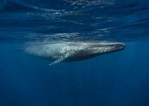

Baleia-comum
A baleia-comum (Balaenoptera physalus), também chamada de baleia-fin e rorqual-comum, é um mamífero marinho que pertence à família dos balenopterídeos, da ordem dos cetáceos. É o segundo maior animal existente, depois da baleia-azul,[3] podendo atingir um comprimento de até 25,9 metros,[4] embora haja relatos de espécimes com 27,3 m.[3][5]
Longo e esguio, o corpo da baleia-comum é cinza-amarronzado e sua parte inferior é esbranquiçada. Existem ao menos duas subespécies distintas: a baleia-comum-do-norte, encontrada no Atlântico Norte, e a baleia-comum-antártica do Oceano Antártico. É encontrada em todos os principais oceanos, das águas polares às tropicais. A espécie está ausente somente nas águas próximas aos blocos de gelo dos pólos norte e sul e áreas relativamente pequenas de águas afastadas do alto mar. A maior densidade populacional da baleia-comum ocorre em águas frias e temperadas.[6] Sua alimentação consiste de pequenos cardumes de peixe, lulas e crustáceos como os misidáceos e o krill.
Descrição e Comportamento
A baleia-comum é comumente caracterizada por seu grande tamanho e corpo esbelto. A média de tamanho dos machos e fêmeas da espécie é de 19 e 20 metros, respectivamente. Subespécies no hemisfério norte são conhecidas por atingir comprimentos de até 24 metros, e as espécies antárticas, de até 26,8 metros.[3] Ainda não há registros da pesagem de um espécime adulto, mas cálculos sugerem que um adulto de 25 metros pese em torno de 70 mil quilogramas, ou 70 toneladas. A maturidade física completa se atinge entre 25 e 30 anos, embora se saiba que essas baleias costumam viver até os 94 anos de idade.[17] Uma baleia-comum recém-nascida mede aproximadamente 6,5 metros de comprimento e pesa aproximadamente 1 800 quilogramas.[18] O grande tamanho ajuda na identificação do animal, que geralmente é confundido apenas com a baleia-azul, a baleia-sei ou, em águas quentes, com a baleia-de-bryde.[carece de fontes]
A baleia-comum tem a parte de cima e lados de coloração cinza-amarronzada e a parte inferior esbranquiçada. Ela tem um focinho pontudo, espiráculos emparelhados e um amplo e achatado bico. Dois padrões em forma de V de coloração clara começam atrás dos espiráculos e seguem pelos lados em direção à cauda numa diagonal, inclinada para cima, até a barbatana dorsal, às vezes recurvando-se adiante nas costas.[3] Ela tem uma marca branca na direita da mandíbula inferior, enquanto o lado esquerdo é cinza ou preto[18] Apesar de poder ser ocasionalmente observada em baleias-minke, essa assimetria é universal na baleia-comum e rara entre os cetáceos, constituindo-se uma das chaves para a identificação dessa espécie. Uma hipótese que explica o desenvolvimento desta assimetria é a preferência da baleia em nadar em seu lado direito quando sobe à superfície para se lançar novamente à água, e circular à direita quando se encontra na superfície, acima de uma presa. Porém, geralmente outras baleias circulam à esquerda. Apesar da existência de várias hipóteses, nenhuma é aceita no meio científico para explicar essa assimetria.[19]
Reprodução
O encontro entre machos e fêmeas ocorre em mares e tem cerca de 3 reproduções sexuais por dia, a cada reprodução a baleia solta 2 mil litros de esperma e pelo menos mil litros vazam para o mar, e o período de gestação dura de onze meses a um ano. Um filhote desmama de sua mãe 6 ou 7 meses após o nascimento, quando alcança 11 ou 12 metros de comprimento, e o filhote acompanha a mãe para a área de alimentação de inverno. As fêmeas se reproduzem a cada 2 ou 3 anos, produzindo até 6 fetos, mas nascimentos únicos são mais comuns. As fêmeas alcançam a maturidade sexual entre 3 e 12 anos de idade.[18]
Tubarão
Tubarão ou cação é um tipo de peixe de esqueleto cartilaginoso e um corpo hidrodinâmico (com exceção dos Squatiniformes, Hexanchiformes e Orectolobiformes) pertencente à superordem Selachimorpha. Os primeiros tubarões conhecidos viveram há aproximadamente 400 milhões de anos.[1]
Os tubarões se diversificaram em aproximadamente 440 espécies (no Brasil são conhecidas 88),[2] variando em tamanho desde o menor, o tubarão-lanterna anão, Etmopterus perryi, uma espécie de no máximo 21 centímetros de comprimento[3], ao tubarão-baleia, Rhincodon typus, o maior, que atinge cerca de 12 metros e que se alimenta por filtragem apenas de plâncton, lulas e pequenos peixes.[4] Os tubarões são encontrados em todos os mares[5] e são comuns em profundidades até 2 000 metros.
Dentes
Dentes de tubarão são incorporados nas gengivas e não diretamente no maxilar, e são constantemente substituídos ao longo da vida. Diversas linhas de dentes substitutos crescem em um sulco na parte interna da mandíbula e progressivamente avançam como em uma "escada rolante"; os tubarões perdem em média 6 000 dentes por ano[20] e chegam a perder 30 000 durante toda sua vida.[21] A taxa de substituição de dentes varia de uma vez a cada oito ou dez dias a vários meses. Na maioria das espécies os dentes são substituídos um por vez, exceto no peixe-charuto, Isistius, onde toda a linha de dentes é substituída simultaneamente.[22]
A forma do dente depende da dieta: os tubarões que se alimentam de moluscos e crustáceos têm densos dentes achatados para esmagarem; aqueles que se alimentam de peixes tem dentes afiados para prenderem; e aqueles que se alimentam de presas maiores, como mamíferos, têm os dentes inferiores pontiagudos para prender e os dentes superiores triangulares e com bordas serrilhadas para cortar. Os dentes dos que se alimentam de plâncton, como o tubarão-elefante, são menores e não funcionais.[23]